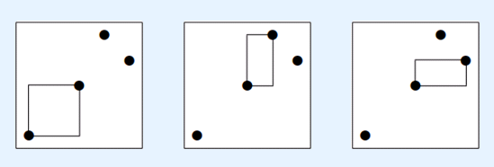

BZPRO
#4237. 稻草人
内存限制：256 MiB
时间限制：40 Sec
提交
提交记录
讨论
题目描述
JOI村有一片荒地，上面竖着N个稻草人，村民们每年多次在稻草人们的周围举行祭典。
有一次，JOI村的村长听到了稻草人们的启示，计划在荒地中开垦一片田地。和启示中的一样，田地需要满足以下条件：
田地的形状是边平行于坐标轴的长方形；
左下角和右上角各有一个稻草人；
田地的内部(不包括边界)没有稻草人。
给出每个稻草人的坐标，请你求出有多少遵从启示的田地的个数
输入格式
第一行一个正整数N，代表稻草人的个数
接下来N行，第i行(1<=i<=N)包含2个由空格分隔的整数Xi和Yi，表示第i个稻草人的坐标
输出格式
输出一行一个正整数，代表遵从启示的田地的个数
样例
样例输入
4
0 0
2 2
3 4
4 3
样例输出
3
数据范围与提示
所有满足要求的田地由下图所示：

1<=N<=2*10^5
0<=Xi<=10^9(1<=i<=N)
0<=Yi<=10^9(1<=i<=N)
Xi(1<=i<=N)互不相同。
Yi(1<=i<=N)互不相同。